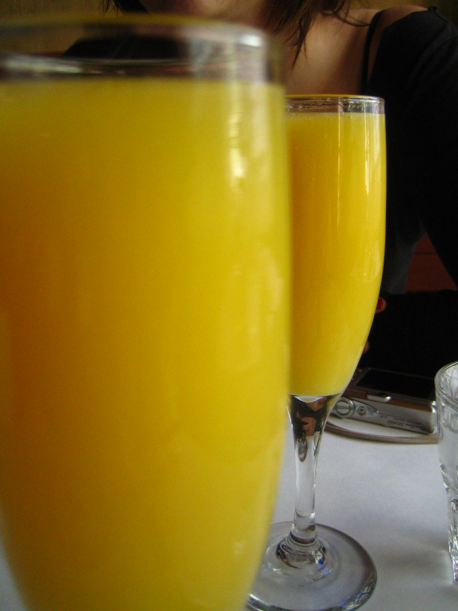

ミモザ
Mimosa
スパークリングアルコールシャンパンフルートWine ベースIBA: Contemporary Classics

材料
| シャンパン | 冷やした |
|---|---|
| オレンジジュース | 60 ml |
作り方
よく冷やしたシャンパンとオレンジジュースを、フルートグラスへ静かに注ぐ。1925年パリのリッツが発祥とされる華やかな朝食向きカクテルで、柑橘の酸味と泡の繊細さが軽やかに溶け合う。
画像: File:Mimosa cocktail.jpg by Rick Audet from San Francisco, USA / CC BY 2.0
CocktailShelf で他のカクテルも探す
所持している材料から作れるカクテルを探したり、お気に入りを保存したり。トップページへ